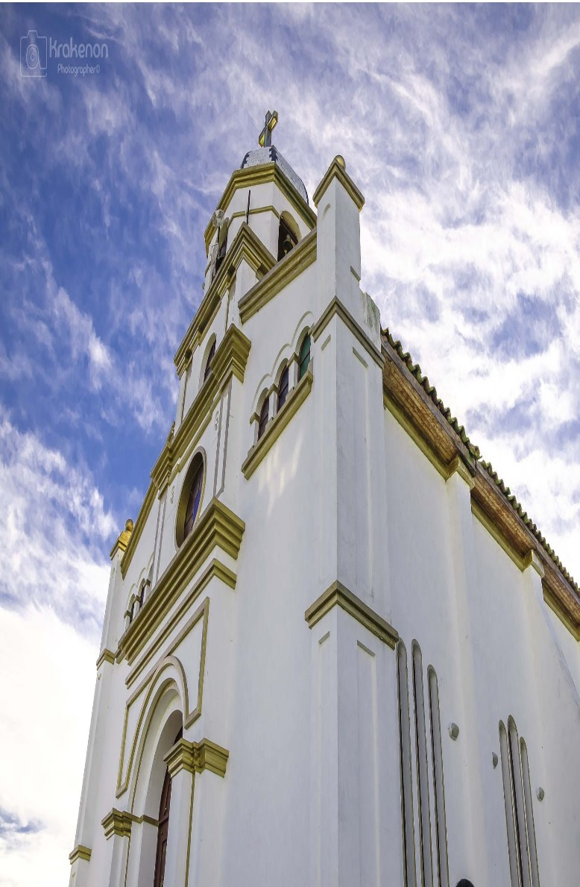

Iglecia valvanera


Como fortaleza cultura y centro de convenciones y eventos contamos con múltiples servicios a tu disposición. Visita nuestros servicios y entérate de todo lo que podemos hacer.
Se le conoce como La Ciudad de la Luna, en referencia a la etimología de su nombre, que proviene de la diosa muisca de la Luna, protectora de la diversión, los bailes y las artes, y en cuyo honor había un templo construido en el poblado precolombino..
Fue construido en el año 1944 en honor al expresidente liberal Alfonso López Pumarejo, así fue llamado el parque Alfonso López; luego en el año 1951, se le cambió el nombre a parque Ospina Perez en honor al expresidente Mariano Ospina Perez.
Cuenta con diversos paisajes en zonas de vida de montaña, bosques de niebla y subpáramo, nacimientos de agua, lagunas y ríos.
En la vía Chía-Cajicá a las afueras de Bogotá, se encuentra Fontanar, un lugar que nace del deseo de atender y resolver necesidades humanas
Club Campestre Lagos de Chia lugar para familas y amigos completamente gratis para todo publico
Es un moderno centro comercial que mezcla lo mejor de la ciudad con el aire puro y la tranquilidad del campo, somos naturalmente únicos.
Un lugar turistico con atracciones gastronomicas como didacticas
se encuentra ubicado en el bello Municipio de Chía. Somos un Centro Comercial a cielo abierto, muy colorido y amable con el Medio Ambiente.